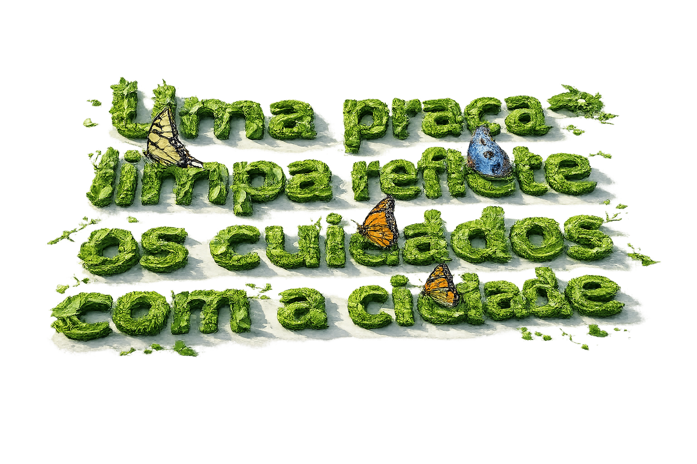

Limpeza de praças
Cuide do seu ambiente com serviços profissionais de jardinagem e roçagem.

A praça é o cartão de visita da sua cidade, e a manutenção é o nosso compromisso.
Para um visitante ou um turista, faz a total diferença.
WGA Cidade de Ribeirão Bonito-sp. Praça São Benedito-centro
Antes
Depois
WGA